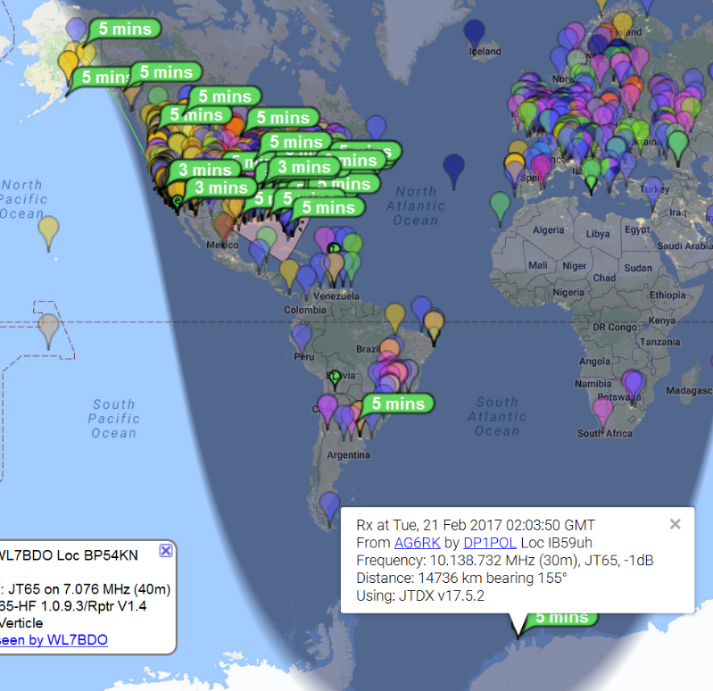

Team
I cranked our four element SteppIR down to 40 feet (from 63 feet) and it survived the wind gusts here in Saratoga again……for you ex-military guys and gals..it was a “high pucker factor” experience for about 10 minutes watching the SteppIR dance and move in the wind gusts at the worst of it…..the SteppIR survived but a few large tree branches did not..our elevation is only about 440 feet above Santa Clara Valley but we seem to get some pretty good wind gusts. Things are pretty calm right now…..
The elevated 80M vertical survived also..this time! J
I love this hobby! 73, Ted, K6XN
From: Chat [mailto:chat-bounces@ncdxc.org
] On Behalf Of Rob via Chat
Sent: Monday, February 20, 2017 6:18 PM
To: Mike Flowers; CHAT NCDXC
Subject: Re: [NCDXC Chat] Wind clocking 40 + from 190'. Much groaning of tower and beams. Jim
High gusts here too, tower nested & SteppIR dancing....but able to work DP1POL Antarctica JT65 with 30w:

73,
Rob - AG6RK
From: Mike Flowers via Chat <chat@ncdxc.org>
To: Chat NCDXC <chat@ncdxc.org>
Sent: Monday, February 20, 2017 5:46 PM
Subject: Re: [NCDXC Chat] Wind clocking 40 + from 190'. Much groaning of tower and beams. Jim
Mast at 20', SteppIR element tips into the wind. The fiberglass element are really dancing around.
Managed to work P29LL on 15M CW anyway.
-- Mike Flowers, K6MKF, NCDXC - "It's about DX!"
> On Feb 20, 2017, at 5:32 PM, jim sansoterra via Chat <chat@ncdxc.org> wrote:
>
> _______________________________________________
> Chat mailing list
> Chat@ncdxc.org
> http://mail.ncdxc.org/mailman/listinfo/chat_ncdxc.org
> Message delivered to mike.flowers@gmail.com
_______________________________________________
Chat mailing list
Chat@ncdxc.org
http://mail.ncdxc.org/mailman/listinfo/chat_ncdxc.org
Message delivered to robsendemail@yahoo.com
_______________________________________________
Chat mailing list
Chat@ncdxc.org
http://mail.ncdxc.org/mailman/listinfo/chat_ncdxc.org
Message delivered to pdlpsher@gmail.com

{kind=link}